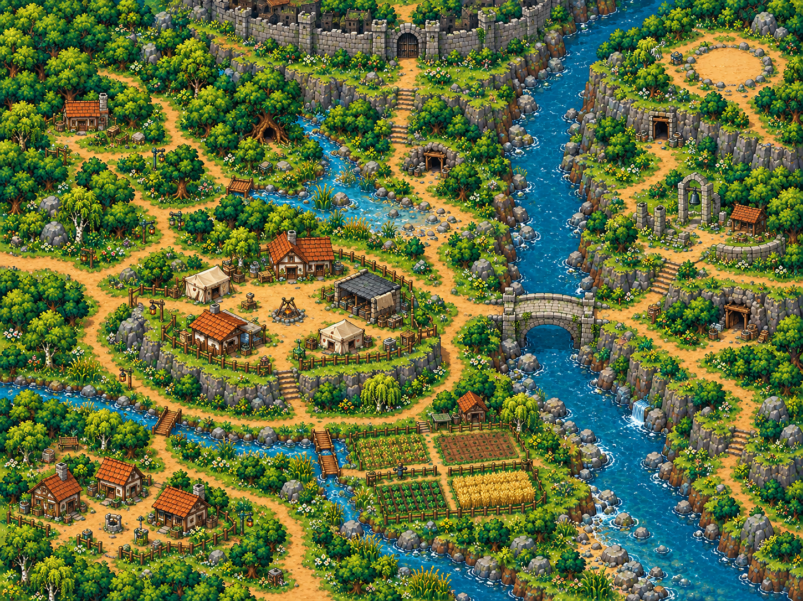

Thiết kế toàn cảnh đã chốt

Nguồn vị trí: artX/artY của hồ sơ Map 1.
Bản r009 dựng lại khối thềm: các đoạn vách dùng chung đường đỉnh và đường chân, texture nối liên tục. Vùng 2 dùng cùng vật liệu nền, thêm chi tiết ven nước/sân nhà và cao độ chuyển tiếp dùng chung server/client. Ảnh bên phải chụp từ Phaser, dùng các vật thể và collision của game. Đây là trang đối chiếu; nút vào map mở bản chơi có đăng nhập và lưu PostgreSQL.

Nguồn vị trí: artX/artY của hồ sơ Map 1.

Chụp ở mức thu nhỏ để thấy toàn vùng; camera khi chơi vẫn giữ tỷ lệ bình thường. Mở ảnh lớn
Địa hình, nước, cây và nhà đã được bố trí lại. Nhiệm vụ, NPC chức năng và chiến đấu MMORPG chưa triển khai; ảnh concept vẫn là chuẩn mỹ thuật để tiếp tục hoàn thiện bộ asset.

23 kiểm thử địa hình/di chuyển đạt. Xem thêm kết quả kiểm tra WASD lên/xuống dốc và lưu PostgreSQL.

Tham khảo nguyên tắc đọc cao độ từ CrossCode · nhà phát triển và cách bố trí cảnh pixel từ Eastward · ảnh chính thức. Không sử dụng asset của hai game.
| Địa danh | Thiết kế (% X/Y) | Trong map (% X/Y) | Đối chiếu vị trí |
|---|